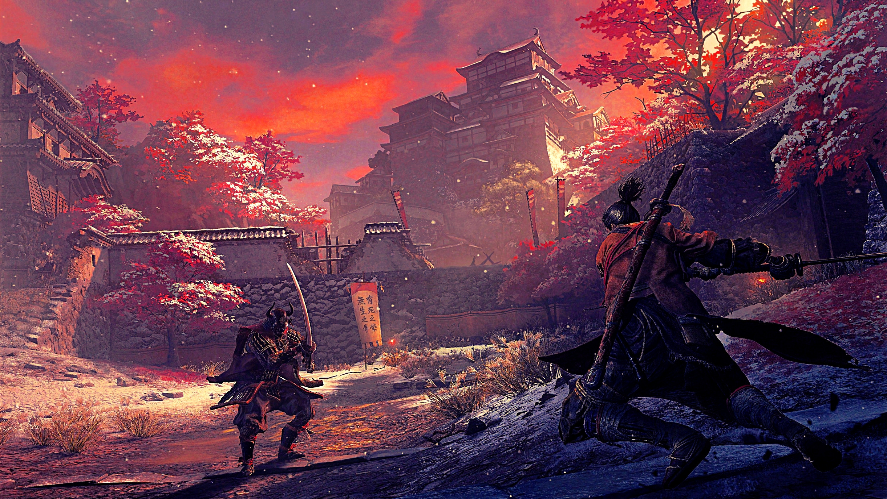
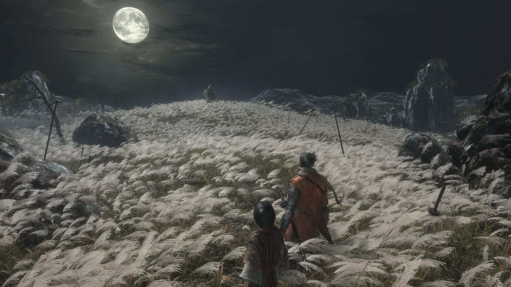

В Sekiro: Shadows Die Twice вы - “однорукий волк”, опозоренный и изуродованный воин, спасенный от грани смерти.
Обязанный защищать молодого лорда, который является потомком древней родословной, вы становитесь мишенью многих злобных врагов, включая опасный клан Ашина.
Когда молодой лорд будет схвачен, ничто не остановит вас в опасном стремлении вернуть свою честь, даже сама смерть.

Исследуйте Японию Сэнгоку конца 1500-х годов, жестокий период постоянного конфликта не на жизнь, а на смерть, когда вы столкнетесь лицом к лицу с более серьезными врагами в темном и извращенном мире.
Раскройте арсенал смертоносных протезов и мощных способностей ниндзя, сочетая скрытность, вертикальный обход и интуитивный бой лицом к лицу в кровавом противостоянии.
